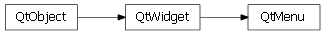

Bases: enaml.widgets.widget.Widget
A widget used as a menu in a MenuBar.
The title to use for the menu.
Whether this menu should behave as a context menu for its parent.
The items in the menu: Menu | Action | ActionGroup
Returns the snapshot dict for the Menu.
Bind the change handlers for the menu.
alias of __NoInterface__

Bases: enaml.qt.qt_widget.QtWidget
A Qt implementation of an Enaml Menu.
Create the underlying menu widget.
Create and initialize the underlying widget.
Initialize the layout for the underlying widget.
Handle the child removed event for a QtMenu.
Handle the child added event for a QtMenu.
Get the QAction instance which comes immediately after the actions of the given child.
| Parameters: | child (QtMenu, QtActionGroup, or QtAction) – The child of interest. |
|---|---|
| Returns: | result (QAction or None) – The QAction which comes immediately after the actions of the given child, or None if no actions follow the child. |
Handle the ‘set_title’ action from the Enaml widget.
Handle the ‘set_context_menu’ action from the Enaml widget.
Set the visibility on the underlying widget.
This is an overridden method which sets the visibility on the underlying QAction for the menu instead of on the menu itself.
Set the title of the underlying widget.
Set whether or not the menu is a context menu.

Bases: enaml.wx.wx_widget.WxWidget
A Wx implementation of an Enaml Menu.
Create the underlying wx menu widget.
Create and initialize the underlying control.
Initialize the layout for the underlying control.
Handle the child removed event for a WxMenu.
Handle the child added event for a WxMenu.
Get the wxAction or wxMenu instance which comes immediately after the actions of the given child.
| Parameters: | child (WxMenu, WxActionGroup, or WxAction) – The child of interest. |
|---|---|
| Returns: | result (wxAction, wxMenu, or None) – The wxAction or wxMenu which comes immediately after the actions of the given child, or None if no actions follow the child. |
Handle the ‘set_title’ action from the Enaml widget.
Set the title of the underlyling control.
Overridden parent class method.
This properly sets the enabled state on a menu using the custom wxMenu api.
Overrdden parent class method.
This properly sets the visible state on a menu using the custom wxMenu api.
Overridden parent class method.
Menus do not have a minimum size, so this method is a no-op.
Overridden parent class method.
Menus do not have a maximum size, so this method is a no-op.